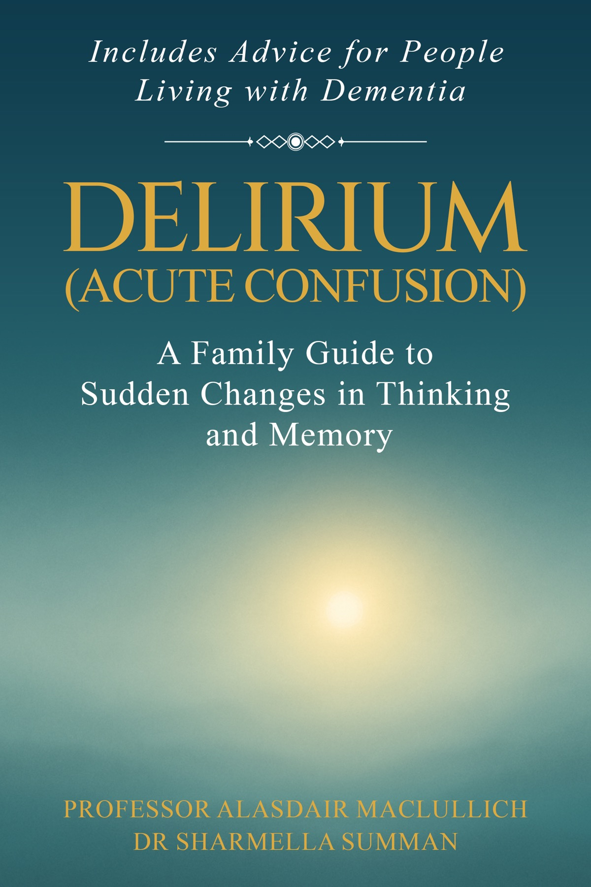
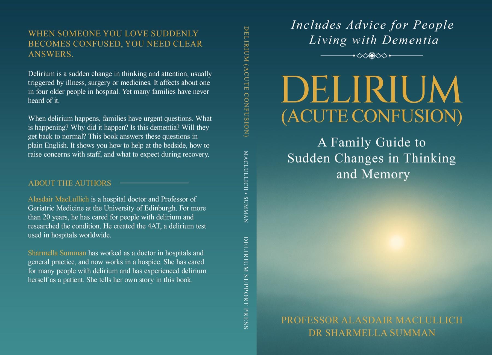

Understanding delirium
What delirium is, how common it is, what causes it and how doctors diagnose and treat it.
For patients, families and carers
Publishing October 2026
A Family Guide to Sudden Changes in Thinking and Memory
A detailed, plain-English guide to what delirium is, why it happens, what care may involve and what families can do. Read it through, or keep it close for easy reference.
Includes advice for people living with dementia.

About the book
When a relative or friend becomes confused, behaves unusually or seems to be seeing things that are not there, families often receive a great deal of information in a short time. This guide explains delirium in a form that can be read at the bedside, at home or later during recovery.
It covers delirium in hospital, intensive care, care homes and at home. It also looks at hallucinations, false beliefs, medicines, safety, recovery and the difficult overlap between delirium and dementia.
Why a book?
Delirium Support and this book share the same purpose: to help patients and families understand delirium and respond to it. The website provides free information when an answer is needed quickly. The book brings the subject together in greater depth, with a clear route from the first signs of delirium through care, recovery and life afterwards.
It is for people who want to read from beginning to end, or return to a particular question later. Kindle and print editions will offer a choice between a portable digital copy and a detailed physical book that can be kept nearby, marked and lent to someone else.
What the guide covers
What delirium is, how common it is, what causes it and how doctors diagnose and treat it.
What delirium may feel like for the person, and what families often see and experience.
What happens on the ward, medicines, raising concerns, persistent delirium and going home.
Delirium at home, after surgery, in intensive care, in care homes and near the end of life.
How they differ, how they interact and what delirium may mean for future memory problems.
Plain actions, useful questions, sources of help, a glossary and a quick action guide.
Free illustrated preview
The revised chapters are in their final editorial and illustration stage. A professionally typeset PDF will be available here shortly, together with occasional email updates about the book and its publication in October 2026.
Expected in early August 2026
The email form will appear here after the final files, confirmation email and download route have been tested.
The authors

Publication
Kindle and print editions are planned for October 2026. The Kindle edition will keep the guide available on a phone, tablet or e-reader. The print edition will provide a detailed physical reference to keep at home, take to appointments and share with relatives.
Read the illustrated preview when it is ready
Published by Delirium Support Press.